Miary synkopy
Biblioteka SynPy
W ramach projektu biblioteka SynPy została przeportowana z Pythona wersji 2 do Pythona wersji 3. Biblioteka implementuje kilka modeli rozpoznawania synkopy w utworach zapisanych w formacie symbolicznym (MIDI). Stanowi platformę do analizy synkopy w utworach i ułatwia wyrażenie jej w formacie liczbowym, a także umożliwia porównywanie modeli ze sobą.
Opis modeli
Longuet-Higgins and Lee 1984 (LHL)
Model rozkłada strumień dźwięków do struktury drzewiastej, gdzie elementy rytmu występujące wyżej w hierarchii mają wyższą “siłę”. W ten sposób możliwe jest ustanowienie podstawowego wzoru rytmicznego. Według tego modelu synkopa występuje, gdy po nucie w “słabszej” pozycji występuje przerwa w “silniejszej” pozycji.
Pressing 1997 (PRS)
Model analizuje sekwencje rytmiczne w utworze i nadaje każdej sekwencji wynik w zależności od wykrytego wzoru rytmicznego. Predefiniowane wzory, do których porównywane są sekwencje w utworze, mają z góry ustalony wynik.
Toussaint 2002 ‘Metric Complexity’ (TMC)
Model definiuje poziom synkopy jako różnicę między zmierzoną złożonością rytmiczną danej sekwencji, a najmniejszą możliwą złożonością rytmiczną sekwencji składającej się z takiej samej liczby nut.
Sioros and Guedes 2011 (SG)
Podobnie jak model LHL, ten model stosuje podejście hierarchiczne do analizy sekwencji nut. W tym modelu poziom synkopy jest wyliczany na podstawie dynamiki oraz położenia analizowanej nuty w hierarchii rytmicznej, a także położenia nuty poprzedzającej i następującej.
Toussaint 2005 ‘Off-Beatness’ (TOB)
Nuty synkopowane to te, które występują poza głównym taktem, przy czym takt jest definiowany jako elementy w sekwencji, które występują w regularnych odstępach czasowych w cyklu.
Gomez 2005 ‘Weighted Note-to-Beat Distance’(WNBD)
Nuta ma tym wyższą wartośc synkopy, im dalej znajduje się od najbliższego taktu (występuje poza taktem). Synkopa jest silniejsza, jeśli nuta czasem trwania przekracza kolejny takt.
Eksperymenty
Poza testami jednostkowymi, sprawdzającymi poprawność nowego wrappera oraz przeportowanego kodu, dokonano weryfikacji modeli na kilku spreparowanych plikach MIDI, zawierających 4 takty bez synkopy (nuty w ‘beacie’ taktu, niektóre modele mogły znaleźć w nich synkopę) i kilka taktów z różnymi układami nut w off-beacie. Test miał na celu weryfikację, że modele z SynPy poprawnie wykrywają synkopę i zwracają większe wartości dla dalszych taktów.
Wyniki dla pliku w metrum 4/4 prezentują się następująco (oś x - takty, oś y - zwracana siła synkopy):
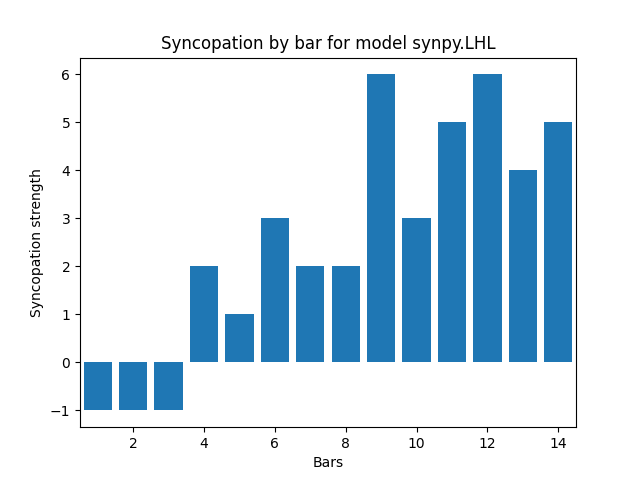 |
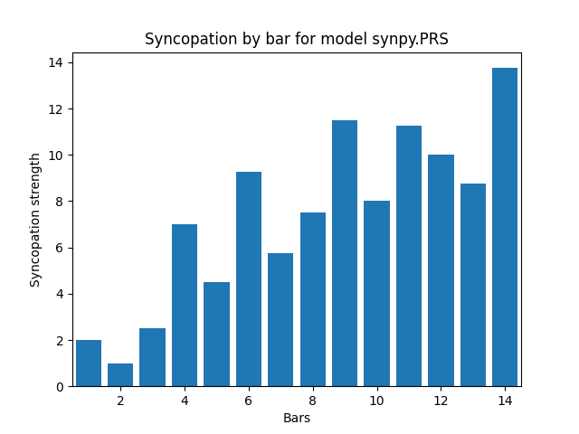 |
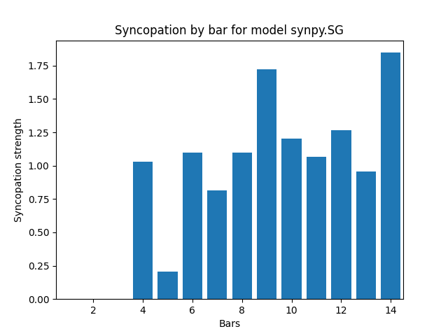 |
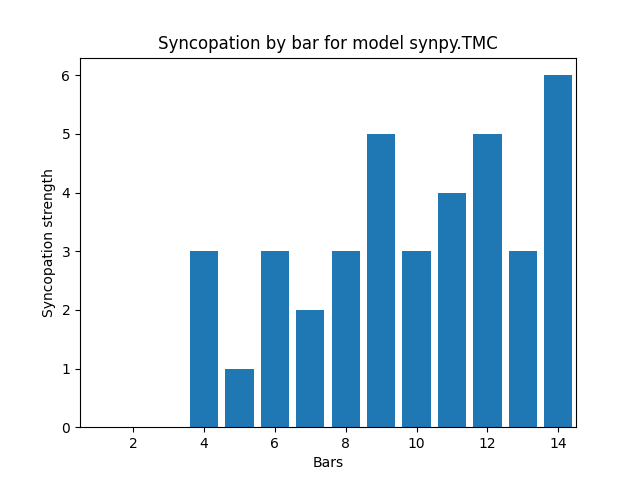 |
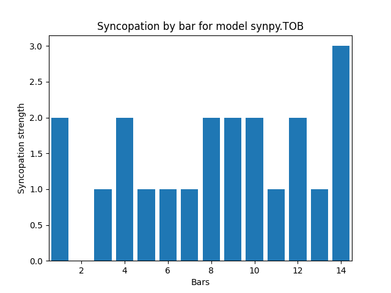 |
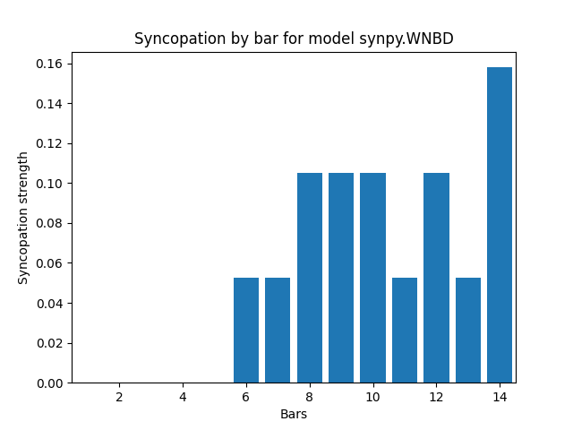 |
Dla plików w metrum 4/4 większość modeli wykryła silniejszą synkopę niż spodziewana dla taktu 4 i mniejsza dla 5, jednak poza TOB wartość synkopy dla pierwszych 3 taktów jest niewielka lub żadna, a dla wszystkich dalszych zgodnie z przewidywaniami występuje. Interpretacja każdego z modeli się od siebie nieco różni, co jest spodziewanym rezultatem, gdyż każdy z nich liczy ją w odmienny sposób.
Przetestowano jeszcze analogiczny plik MIDI w metrum 3/4:
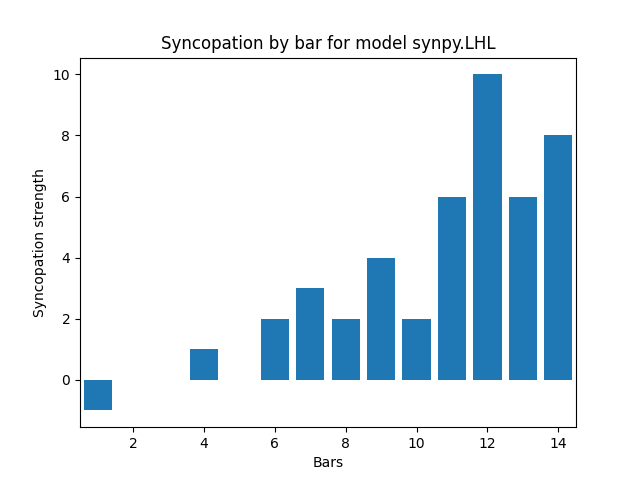 |
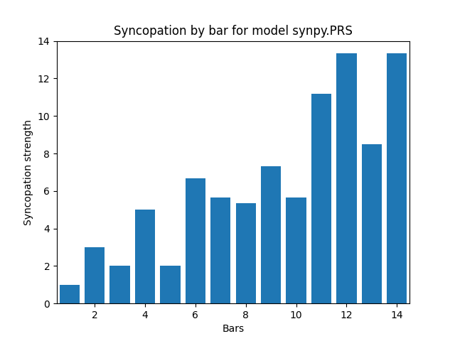 |
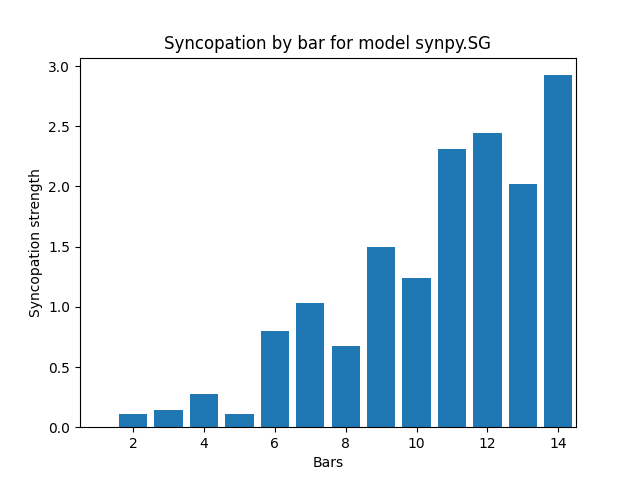 |
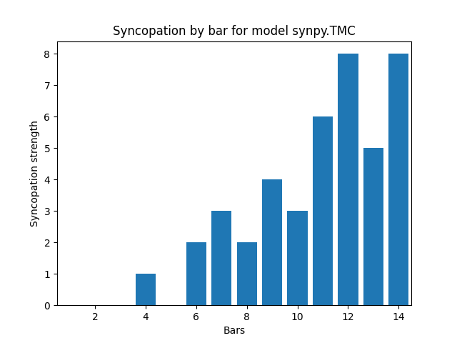 |
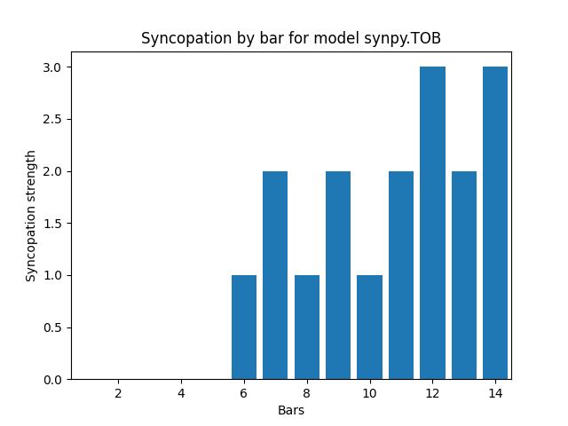 |
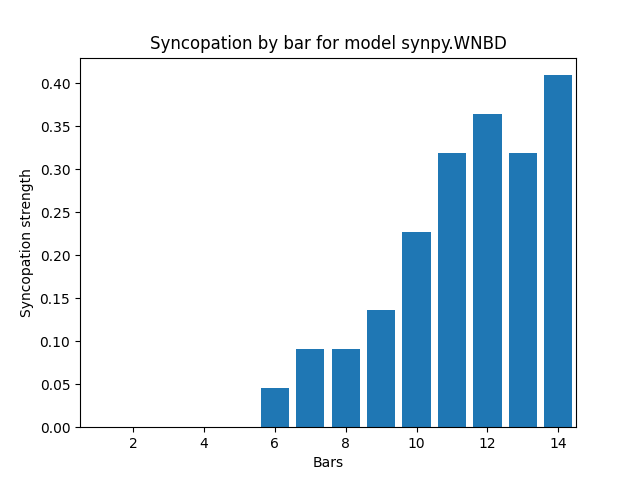 |
Tutaj już widać większe różnice między pierwszymi pięcioma taktami a resztą. Dla tego pliku nawet TOB zwrócił dla nich 0.
Powyższe testy weryfikują poprawność modeli i działanie przeportowanego kodu.
Przyszłe rozszerzenia
Biblioteka SynPy jest już leciwa i nie posiada integracji z innymi, na przykład MusPy. W przyszłości można by ją rozszerzyć o przyjmowanie jako argumentu obiektów Music albo Track z MusPy.
Pozwoliłoby to wyjść poza format MIDI do wszystkich, które obsługuje MysPy.
Dodatkowym ograniczeniem jest fakt, że tylko WNBD i TOB obsługują pliki wielościeżkowe. Integracja przyjmująca Track mogłaby wyliczyć synkopę dla wybranej ścieżki lub dla wszystkich oddzielnie, umożliwiając użycie pozostałych modeli na wielościeżkowych plikach.
Bibliografia
Song, Chunyang & Pearce, Marcus & Harte, Christopher. (2015). SYNPY: A PYTHON TOOLKIT FOR SYNCOPATION MODELLING